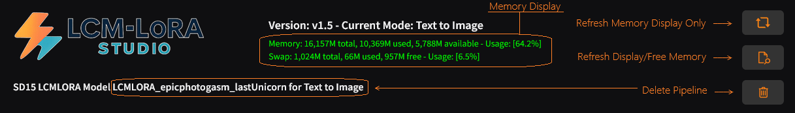

The Memory Display was added with v1.5 to show memory and swap usage.

Refresh Memory Display Only, just refreshes the display. Can be clicked most anytime, even during inference.
Refresh Display/Free Memory, Refreshes the display and tries to free as much memory.
NOTE: Continued clicking will not keep computer from crashing if you did not have enough RAM to begin with. :)
Delete Moodel/Pipeline, just clears the Pipeline and therefore frees up the memory that was being used.
When you load any base model (not LoRA), save a base model (LCM-LoRA Model) or delete the pipeline, the memory is checked and any memory freed if possible. So, you DO NOT need to keep clicking the 'Refresh Display/Free Memory' button !! If you see the display turn RED, it's ok to hit it once or twice.
Copyright (C) 2025-present Rock Stevens